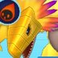

- 세대
- 궁극체
- 종족
 데이터
데이터- 속성
 바람
바람- 소비 메모리
- 22
- 장비 슬롯
- 2
스테이터스 (Lv.99)
HP227012위/98
SP15868위/98
ATK2779위/98
INT13384위/98
DEF17360위/98
SPD23712위/98
막대 길이는 등록된 디지몬 중 최고값 대비 비율이에요. 순위는 스테이터스가 등록된 디지몬끼리 비교해요.
필살기 2
브레스 오브 와이번 바람 SP 25
적 전체물리위력 110
디지몬 속성과 같음SS 보너스 +10%
적 전체에 바람속성 위력 110의 물리공격. 공격 후, 반동으로 HP의 20% 대미지를 받는다.
상성별 대미지 배율 상대 종족(세로) · 속성(가로)상대 속성(세로) · 종족(가로)
×3 이상×2 이상보통×1 미만
| 상대 ↓ / → | |||||||||
|---|---|---|---|---|---|---|---|---|---|
| 백신 | ×2.20 | ×2.20 | ×2.20 | ×2.20 | ×2.20 | ×3.30 | ×2.20 | ×2.20 | ×2.20 |
| 데이터 | ×1.10 | ×1.10 | ×1.10 | ×1.10 | ×1.10 | ×1.65 | ×1.10 | ×1.10 | ×1.10 |
| 바이러스 | ×0.55 | ×0.55 | ×0.55 | ×0.55 | ×0.55 | ×0.83 | ×0.55 | ×0.55 | ×0.55 |
| 프리 | ×1.10 | ×1.10 | ×1.10 | ×1.10 | ×1.10 | ×1.65 | ×1.10 | ×1.10 | ×1.10 |
| ×2.20 | ×1.10 | ×0.55 | ×1.10 | |
| ×2.20 | ×1.10 | ×0.55 | ×1.10 | |
| ×2.20 | ×1.10 | ×0.55 | ×1.10 | |
| ×2.20 | ×1.10 | ×0.55 | ×1.10 | |
| ×2.20 | ×1.10 | ×0.55 | ×1.10 | |
| ×3.30 | ×1.65 | ×0.83 | ×1.65 | |
| ×2.20 | ×1.10 | ×0.55 | ×1.10 | |
| ×2.20 | ×1.10 | ×0.55 | ×1.10 | |
| ×2.20 | ×1.10 | ×0.55 | ×1.10 |
배율 칸을 누르면 계산식이 여기에 나와요.
드래곤즈 로어  불 SP 25
불 SP 25
적 1체물리위력 60 × 2회
디지몬 속성(바람)과 다름SS 보너스 +10%
적 1체에 불속성 위력 60의 물리공격을 2회 하고 50%를 HP로 흡수한다.
상성별 대미지 배율 상대 종족(세로) · 속성(가로)상대 속성(세로) · 종족(가로)
×3 이상×2 이상보통×1 미만
| 상대 ↓ / → | |||||||||
|---|---|---|---|---|---|---|---|---|---|
| 백신 | ×2.20 | ×2.20 | ×3.30 | ×2.20 | ×2.20 | ×2.20 | ×2.20 | ×2.20 | ×2.20 |
| 데이터 | ×1.10 | ×1.10 | ×1.65 | ×1.10 | ×1.10 | ×1.10 | ×1.10 | ×1.10 | ×1.10 |
| 바이러스 | ×0.55 | ×0.55 | ×0.83 | ×0.55 | ×0.55 | ×0.55 | ×0.55 | ×0.55 | ×0.55 |
| 프리 | ×1.10 | ×1.10 | ×1.65 | ×1.10 | ×1.10 | ×1.10 | ×1.10 | ×1.10 | ×1.10 |
| ×2.20 | ×1.10 | ×0.55 | ×1.10 | |
| ×2.20 | ×1.10 | ×0.55 | ×1.10 | |
| ×3.30 | ×1.65 | ×0.83 | ×1.65 | |
| ×2.20 | ×1.10 | ×0.55 | ×1.10 | |
| ×2.20 | ×1.10 | ×0.55 | ×1.10 | |
| ×2.20 | ×1.10 | ×0.55 | ×1.10 | |
| ×2.20 | ×1.10 | ×0.55 | ×1.10 | |
| ×2.20 | ×1.10 | ×0.55 | ×1.10 | |
| ×2.20 | ×1.10 | ×0.55 | ×1.10 |
배율 칸을 누르면 계산식이 여기에 나와요.
SS(서포트스킬)
비룡
불/바람속성 스킬로 주는 대미지가 10% 증가한다.
계승기 (레벨업 습득) 5
이 디지몬이 레벨업으로 배우는 스킬이에요. 배운 스킬은 진화·퇴화해도 계속 쓸 수 있어요.
| 습득 Lv | 스킬 | 속성 | SP |
|---|---|---|---|
| 20 | 윈드 클로 III 적 1체에 바람속성 위력 105의 물리공격. 명중률 95%. | 9 | |
| 35 | 게일 스톰 II 적 전체에 바람속성 위력 45의 물리공격. 명중률 95%. | 7 | |
| 50 | 메테오 폴 II 적 전체에 불속성 위력 45의 물리공격. 명중률 95%. | 7 | |
| 65 | 어택 브레이크 필드 적 전체의 공격력을 10% 내린다. | 20 | |
| 80 | 게일 스톰 III 적 전체에 바람속성 위력 75의 물리공격. 명중률 95%. | 10 |
이 디지몬이 강한 상대 97펼쳐 보기
등록된 디지몬 중 필살기로 ×2 이상 대미지를 줄 수 있는 상대예요. 세대를 누르면 그 세대 목록이 보여요.
궁극체 같은 세대 29 · 다른 세대 상대는 도감에서 볼 수 있어요.

페닉스몬×2.20진화 가능 디지몬
더 이상 진화할 수 없어요.
진화 트리 · 듀나스몬까지 오는 길
왼쪽부터 진화 순서예요. 선은 출발하는 디지몬의 색을 따라가요. 디지몬을 한 번 누르면 거기서 듀나스몬까지 가는 경로만 남고, 한 번 더 누르면 그 디지몬 페이지로 이동해요. 회색 칸은 아직 정보가 없는 디지몬이에요.
유년기I
유년기II
성장기
성숙기
완전체
궁극체